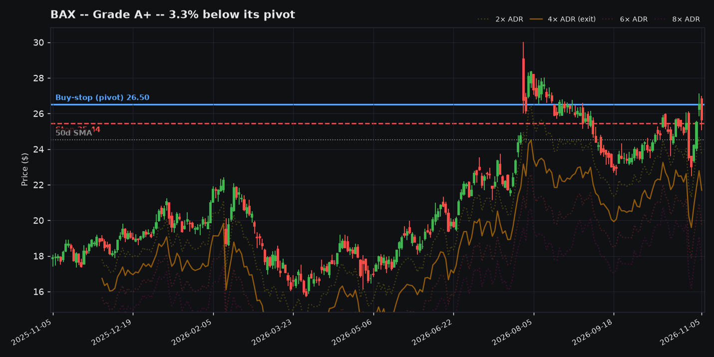
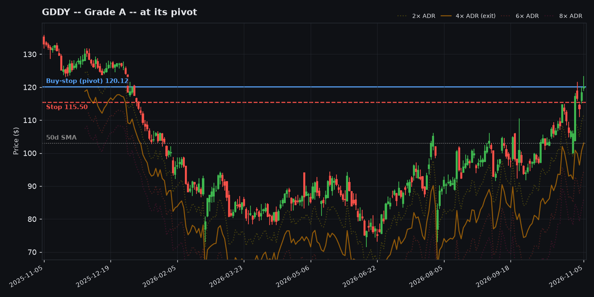
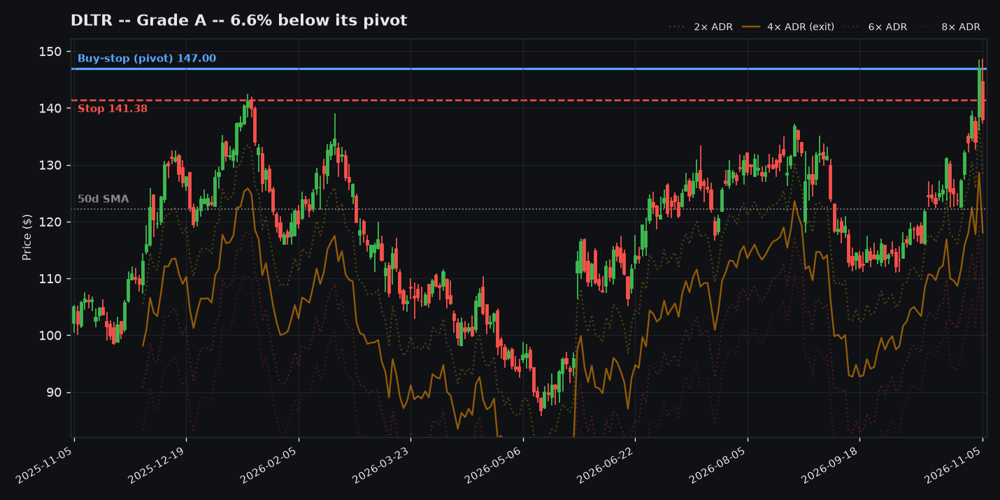
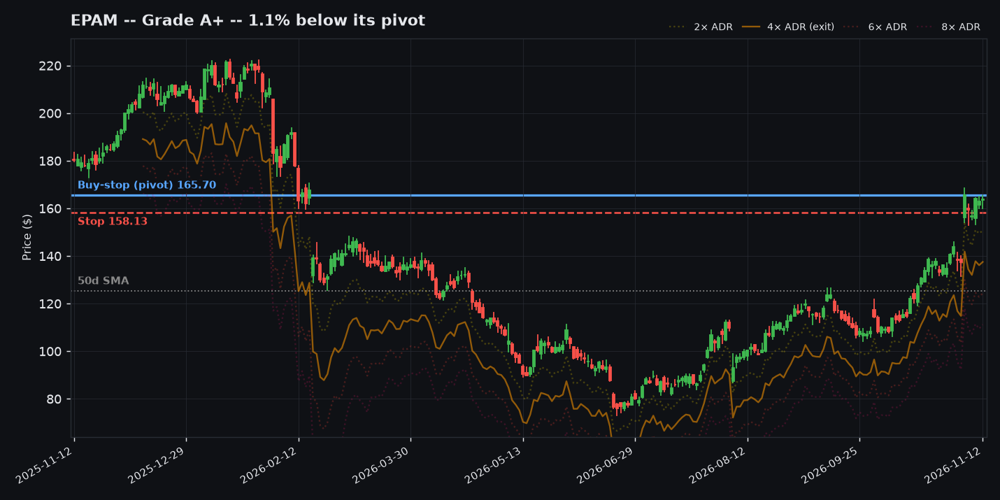
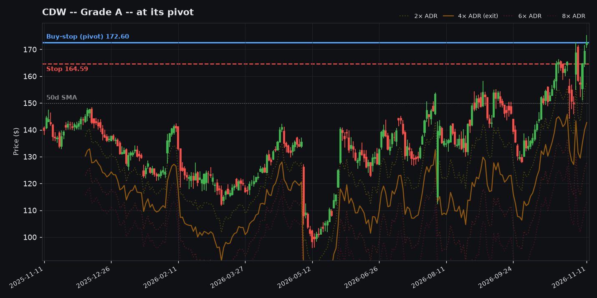
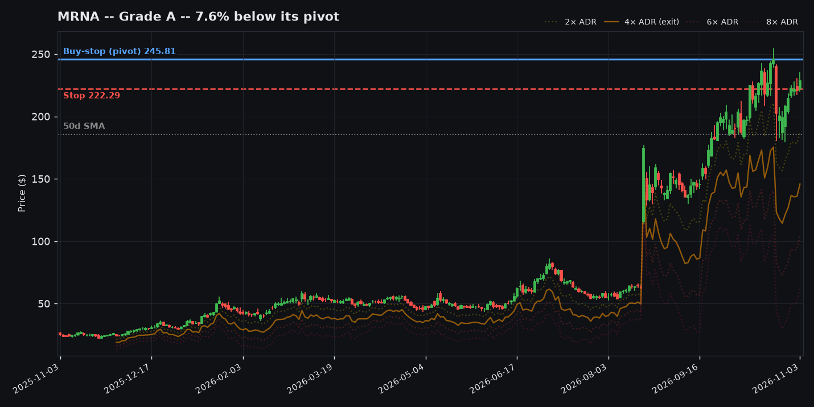
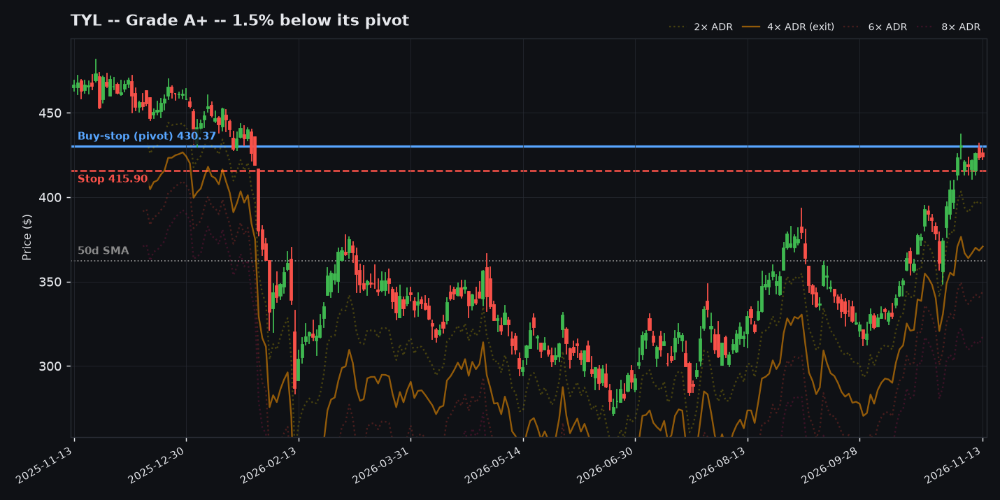
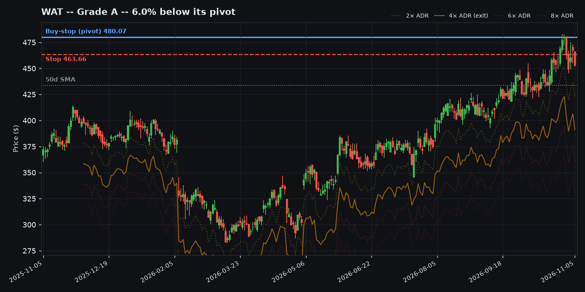

The market is in a defensive posture, with breadth reading 63% of the scanned universe above its 50-day moving average and 7 distribution days in the past month -- an elevated count worth watching. Zooming out, breadth has been deteriorating over the last 60 sessions (-6.3 pt change in % above the 50-day MA) and improving over the last two weeks (+4.7 pt), while SPY is pulling back (-5.5% over 60 sessions, -3.5% over the last two weeks). Breadth actually improving while SPY chops or pulls back is a healthier under-the-surface signal than the index alone suggests. Momentum under the surface is leaning long -- 20 name(s) hit a fresh 52-week high today against 17 breaking down to a fresh 52-week low. Health Care is leading, with 67% of its 60 scanned names carrying an RS score of 70+ and 30 clearing a screen outright today, with Energy also showing real strength. It's being driven by names like MRNA, CNC and CRL. With 82 name(s) clearing a screen across 8 sector(s), there's a workable watchlist below -- see Worth Watching for the shortlist tied to today's regime and themes.
Top A+/A/B setups armed for the next session (same rules as the ‘Today’ tab, the backtest and the forward test). Tap a ticker for its chart.
| # | Ticker | Grade | Strategy | Buy-stop | Stop |
|---|---|---|---|---|---|
| 1 | A+ | Minervini + QM | 26.50 | 25.44 | |
Why score +4
| |||||
| 2 | A | QM | 120.12 | 115.50 | |
Why score +3
| |||||
| 3 | A | QM | 147.00 | 141.38 | |
Why score +3
| |||||
| 4 | A | QM | 165.70 | 158.33 | |
Why score +3
| |||||
| 5 | A | Minervini + QM | 168.75 | 161.53 | |
Why score +3
| |||||
| 6 | A | Minervini + QM | 258.38 | 232.45 | |
Why score +3
| |||||
| 7 | A | QM | 430.37 | 415.11 | |
Why score +3
| |||||
| 8 | A | Minervini + QM | 480.07 | 463.66 | |
Why score +3
| |||||
8 tickers as of 2026-11-05, in the same order as the table above. Bars: blue = this ticker, green tick = grinder archetype avg, orange tick = rocket archetype avg. Screener output, not a recommendation.







